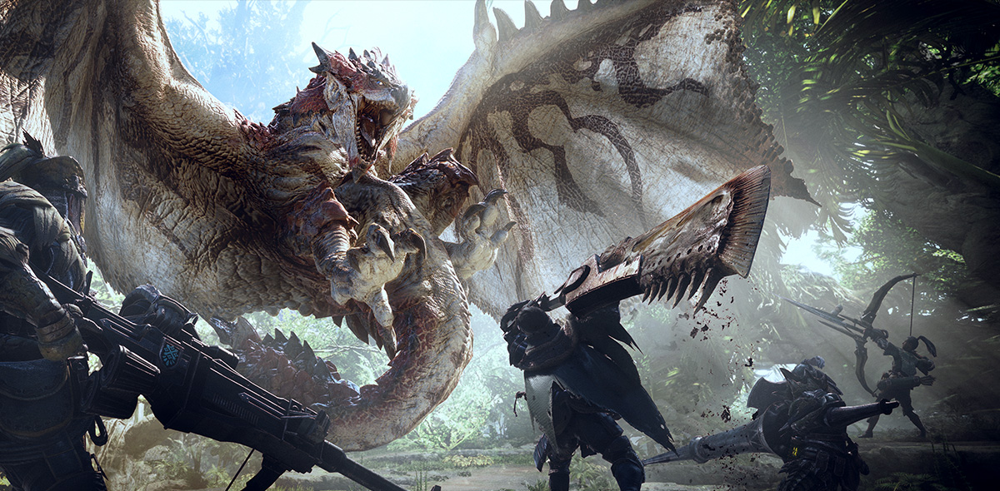

About Me
Hello again! I am Raymond, but you can call me Ray. I am a 30 year old U.S Navy veteran of 10 years who enjoys traveling, gaming, anime, and a science enthusiast. I grew up on the eastern coast of the United States of America and have lived there most of my life. My current major interest is computer programming and am striving to break into the tech industry. Down below, I will tell you in more details of my interests and passions. Thank you again for visiting my page!
Interests & Passions
Traveling
Thanks to the Navy I have been able to visit a few parts of the world, although many were not by choice! Regardless, I have mostly enjoyed my little side adventures while working for the Navy. So far, I have been to eight different countries, some on multiple occasions and of course I have a few favorites, sadly I am not much for selfies, so some of these pictures may be stock photos.
Favorite Places I’ve Been Lucky To Visit
-
El Salvador
My family is from here, and I have made a few visits to my parents' home country, and plan to return very soon. I love it everytime I go. El Salvador has beautiful nature and amazing food. The culture is very welcoming overall, but as you may have heard in the news, it is sadly full of some unwanted personalities. Luckily, in recent years, everything is getting much better. From the local living standards to the safety of tourists. If you ever have a chance to go, I do recommend it, just practice safety at all times, and if you can have a guide, even better!
-
Japan
This is my most recent travel experience. Thanks to the Navy I got to live there for two years, and yes, I picked it. I’ve always wanted to visit Japan ever since I was young, and I do not regret it at all. If you ever have the opportunity to visit, I strongly recommend it. What I loved the most was the food and historical sites. Plenty of temples and shrines to go admire for their beauty and architecture. My favorite places to wonder about were Shibuya and Akihabara in Tokyo, and Dotonbori in Osaka. I hope to visit or stay there for another extended period of time very soon.
-
Greece
The people! Just plainly amazing. Had some of the best human interactions with the people of Greece. They were very welcoming and helpful. I’ve been lucky enough to visit Athens and the island of Crete. The food is and the whole idea of meal time is amazing. You don’t just rush your meal, it is quite expected of you to spend a good portion of time around the dining table, enjoying the company of the people you’re with. Some may not appreciate the “slow” service in some parts of Greece, but that's all part of the experience, as you are actually expected to be there for at least a couple of hours when visiting restaurants. Also, can’t forget about the historical areas of Greece, especially the Acropolis. Just amazing to see the feats of humanity from so long ago. I am sure you’d also enjoy your time there.
Gaming
I have been an advent gamer ever since I was six years old. I remember spending countless hours on my uncle’s Super Nintendo anytime my family would go visit him. When I was 8 years old, I got my own Nintendo 64, and ever since then, I have been gaming. Thanks to my parents for spoiling me (I still had to “work” for it), I came to own an Xbox, Xbox 360, and PC. Once I began earning my own living, I bought myself a PS4 and a much better gaming PC. Today, I play mainly on PC. I also enjoy board games with friends and families, they are a great way to spend time together and learn who is truly loyal!
Some of my Favorite Games:
-
Monster Hunter Series
I got into the Monster Hunter series on the Nintendo DS with Monster Hunter 4: Ultimate. From there, I have played most of their newer series, with Monster Hunter World being my favorite. If you’d look at the amount of hours I’ve devoted to that game, you’d question my life choices! Some of the reasons I truly enjoy this series are that they tend to be quite challenging and rewarding. Playing with friends or solo, you’ll enjoy your time.
 -
Sid Meir’s Civilization

Another series that I have many hours in. It simply is very entertaining and challenging. Requires you to think and strategize or your story may never be in the books. From building up your empire, conquering others, or solving things diplomatically, this game will keep you wanting “just one more turn!”
-
Smash-Up and Uno (Board Game)
If you like deck-building games, these are right up your alley. Instead of having to build decks from card packs, these game already includes the decks for you and your gaming companions to choose from at random and challenge each other at conquering bases or getting rid of all your cards first. Requiring constant strategizing and maybe making some alliances; Who are your true friends? No one, if there is only one winner!
Anime
Grab some snacks, jump on to your couch, bed, or chair and just watch some good, story-filled, action packed, and/or wholesome series. What is there not to like? If you’ve never tried watching anime, you’ve been missing out. Here are some of my favorites but won’t go into much detail to avoid spoilers
-
FullMetal Alchemist: Brotherhood
This version of the anime sticks much closer to the actual manga of the series. It is action packed, tear-jerking, emotional, and just plainly a good story. It is a must watch in my opinion.
-
Code Geass
Mechs, super powers,world domination, and revenge. What more do you want to know?
-
One Piece

Of course this will make the list, those who say that it isn't a good anime has either never watched it, afraid of how long it is (1000+ episodes), or just has something wrong in their heads. A story of a pirate going on a grand adventure to become the king of all pirates and making connections along the way. Full of action and great storytelling. The author, Eiichiro Oda, truly knows how to deliver.
Science
No list for this one, there would just be too many. It is a very broad category, and although many sciences intrigue me, I have to say that sciences that deal with discovering how nature works at a fundamental level and the exploration of space are what really catch my attention. Physics, astronomy, and material science show us the potential of humanity’s future. Many of the technologies that we use today are direct or indirect inspirations from the technology that was developed to explore space and its vastness. I know I may miss out on some of the more science fiction feats, but I do believe that humanity is capable of reaching the stars and beyond, and I wish very much to at least see exploration of the Solar System by humans. I’ll even go if they let me!